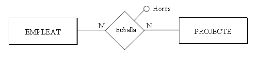

4.9 Restriccions externes
Ja hem comentat que restriccions externes són restriccions que no es poden expressar per mig del model de dades. Aleshores les expressarem de paraula.
Normalment, les restriccions externes del Model E/R continuaran sent-ho en el Model Relacional, perquè tampoc es podran expressar. En el nostre exemple teníem les restriccions externes del Model E/R:
Rex1 : El cap d'un departament ha de ser membre d'aquest.
Rex2 : Un empleat només pot treballar en projectes coordinats pel seu departament.
Açò tampoc es pot expressar amb el Model Relacional, per tant les mantindrem.
A banda, es poden crear més restriccions externes, perquè amb el Model Relacional no es pot expressar tot el que es podia expressar amb el Model E/R. Per exemple, en la relació:

ja hem comentat que donarà lloc, a banda de les taules de les entitats, a una altra taula:

on dni i num_p són claus externes. Però l'entitat projecte participa de forma total en la relació, és a dir, en tot projecte ha d'haver un empleat treballant. ¿Com ho controlem això? Doncs és una nova restricció externa que la podríem formular així:
RexR3 : Tot projecte ha de tenir com a mínim un empleat treballant-hi.
Les participacions totals que ens suposaran una restricció externa són:
-
En una relació 1:N , una participació total de l'entitat que participa amb grau 1.
-
En una relació M:N , qualsevol participació total (si les dues participen de forma total, aleshores hi haurà dues restriccions externes).
-
En una relació 1:1 , depèn de la manera de traduir-se.
La manera d'implementar les restriccions externes serà per mig d'un TRIGGER, que s'active quan hi haja una actualització (inserció, modificació o esborrat) que afecte a la restricció externa. Per exemple, en la restricció RexR3 els moments importants són després d'inserir un nou projecte, i abans d'eliminar o modificar en la taula Treballa (per si un projecte es queda sense gent treballant en ell).
Les accions a desenvolupar podrien ser traure un avís, o obligar a inserir com a mínim una tupla en la taula Treballa , en el cas de la inserció d'un nou projecte; en el cas de modificació o eliminació en Treballa podria impedir-se aquesta actualització.
En el nostre exemple tindrem les restriccions externes al Model Relacional:
RexR1 : El cap d'un departament ha de ser membre d'aquest.
RexR2 : Un empleat només pot treballar en projectes coordinats pel seu departament.
RexR3 : Tot projecte ha de tenir com a mínim un empleat treballant-hi.
Llicenciat sota la Llicència Creative Commons Reconeixement NoComercial CompartirIgual 3.0